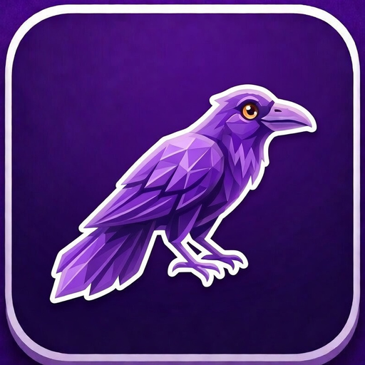

BTTV, FrankerFaceZ, and 7TV emotes in Safari — plus 50+ features to make Twitch better. Auto-claim, split chat, PiP, anonymous viewing, and more.
Download on the App Store Free · Requires macOS 14.0 or laterFull BetterTTV, FrankerFaceZ, and 7TV support with real-time updates. See every emote your favorite streamers use.
Alternating message backgrounds with 11 color themes. Read fast-moving chats without losing your place.
Automatically collects channel points, Drops, Moments, and watch streaks. Never miss a reward again.
One-click PiP button right in the player. Keep watching while you browse, work, or do anything else.
Watch streams without appearing in the viewer list. Your presence stays completely hidden.
Auto theater mode with pure-black OLED backgrounds and transparent chat overlay. Cinematic viewing experience.
Timestamps, spoiler tags, emote tab-completion, spam filters, keyword highlights, and searchable chat history.
Force any video quality from 160p to Source. Persists across channel navigation — set it once and forget.
Fully localized in English, Spanish, French, German, Japanese, Korean, Portuguese, Chinese, and 11 more.
Download Twitch Plus for free from the Mac App Store. It's a lightweight Safari extension.
Open Safari Settings, go to Extensions, and enable Twitch Plus. Grant permission for twitch.tv.
Visit twitch.tv and everything works automatically. Emotes load, points get claimed, chat gets better.
Thousands of community emotes from BTTV, FFZ, and 7TV are invisible in Safari. When chat spams a reaction and you just see text, that's the problem Twitch Plus solves.
From auto-claiming channel points to split chat, PiP, anonymous viewing, screenshots, clip downloads, and spam filters — features that make Twitch genuinely better to use.
Not a Chrome extension ported to Safari. Twitch Plus is built specifically for Safari with native performance, no background processes, and zero data collection.
Requires macOS 14.0 (Sonoma) or later. Works with Safari 17+.